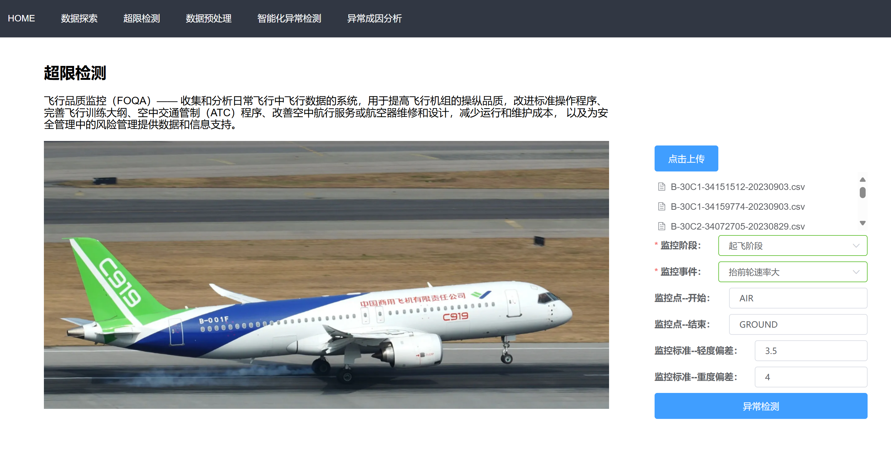
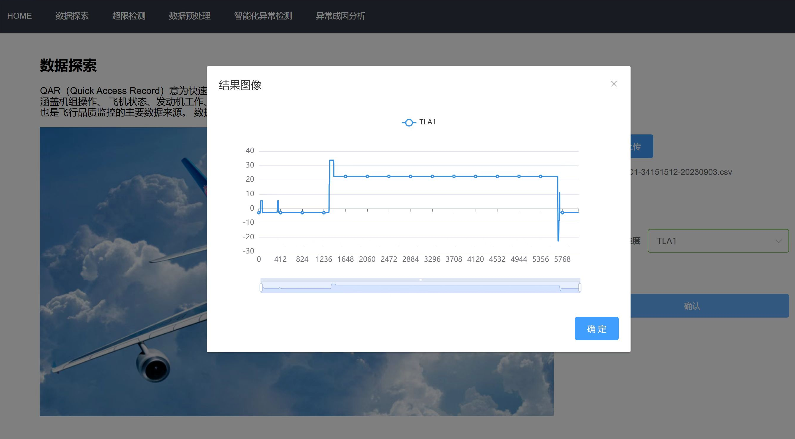
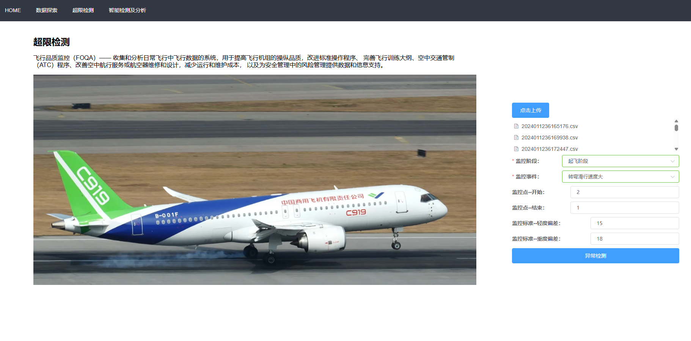
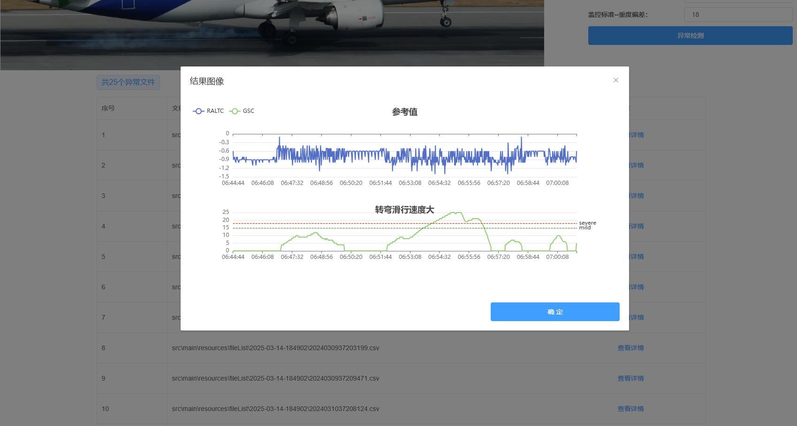
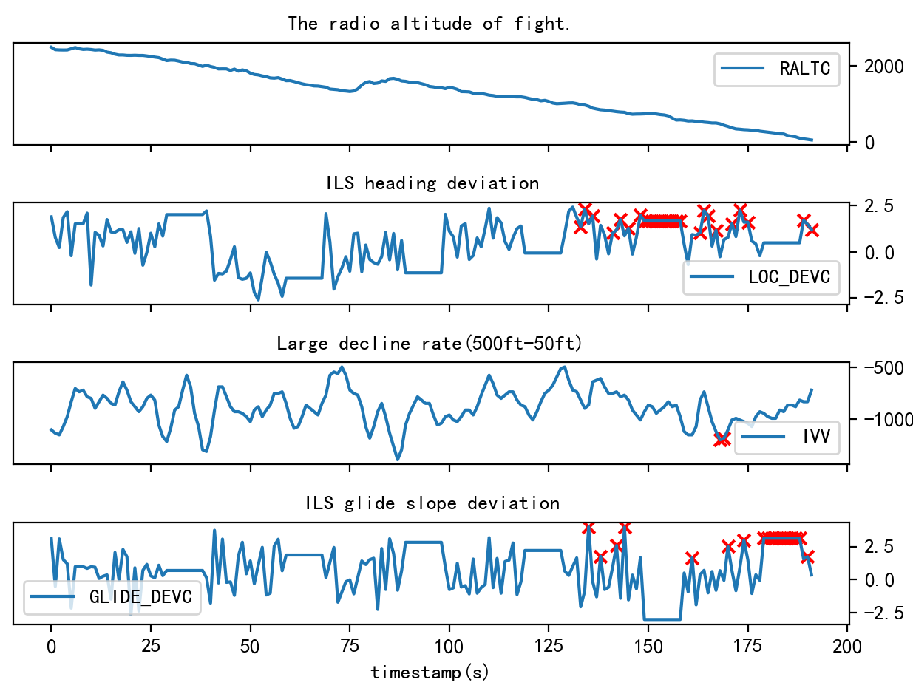

民航飞行品质监控系统
飞行品质监控（Flight Operations Quality Assurance，FOQA）是保障民用航空器飞行安全的国际通用方案。飞行品质监控通过收集和分析快速存储记录器（Quick Access Recorder，QAR）的数据来监测飞行参数超限情况，识别出不符合标准的操作、存在缺陷的程序、航空器性能的衰减、空中交通管制系统的不完善等安全隐患，有助于提高机组操纵品质、改进标准操作程序、完善飞行训练大纲等。
该系统基于民航局发布《航空运输承运人飞行品质监控（FOQA）实施与管理》和《飞行品质监控信息管理办法》文件中规定的监控项目规范设计和开发
该系统的功能包括：
- QAR数据清洗和预处理
- QAR数据探索式分析
- 飞行超限事件检测
- 智能化飞行异常检测及成因分析
|  |  |
| 飞行品质监控系统 | QAR数据探索式分析 |
|  |  |
| 飞行超限事件检测 | |

智能化复杂飞行异常检测